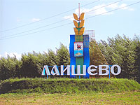

Лаишевский муниципальный район - пятое по величине территории административное образование в составе Республики Татарстан. Площадь района составляет 2074 кв. км. Он занимает юго - западную часть территории Предкамья, расположен при слиянии двух крупных рек Республики Татарстан (на левобережье реки Волги и правобережье р. Камы). Согласно постановлению ВЦИК 14.02.1927 в виде опыта в Татарской республике были образованы 10 районов, среди них - Лаишевский район. Его центр - город Лаишево, районный центр расположен на правом берегу р. Камы, вблизи впадения ее в р. Волгу, в 62 км к юго-востоку от г. Казани. В прошлом город Лаишево - один из городов Волжской Булгарии. Как русское поселение существует с 1557 года. Численность населения составляет – 71646 человека, из них 56% - русских, 41% - татар, 3% представители других национальностей. В районе проживают разные национальности. В состав района входят 23 сельских и одно городское поселения.